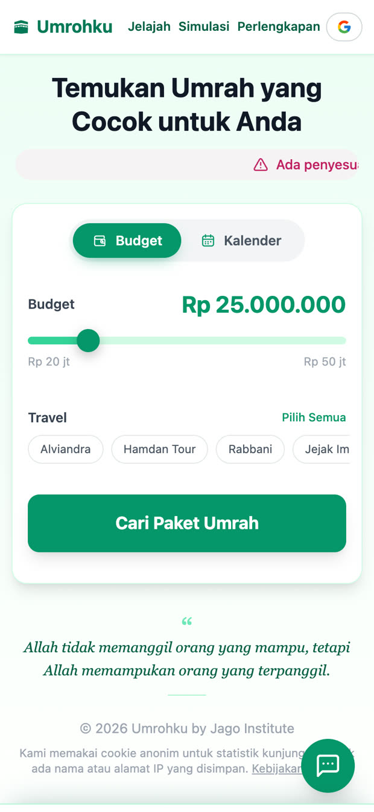
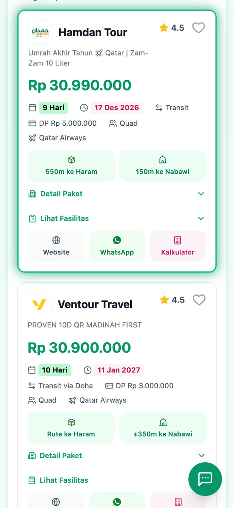
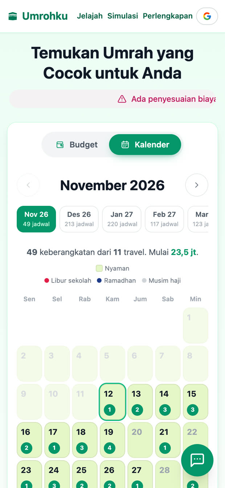
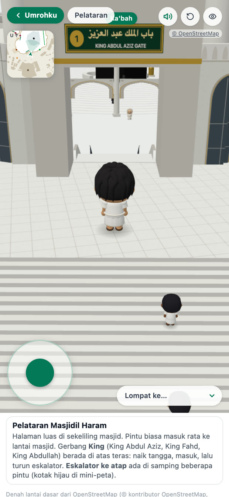
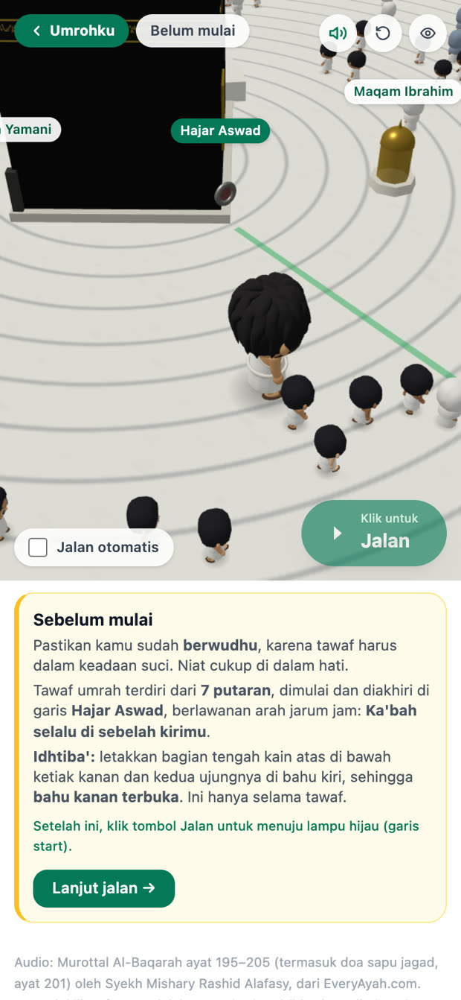
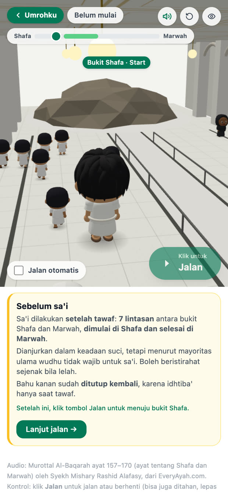
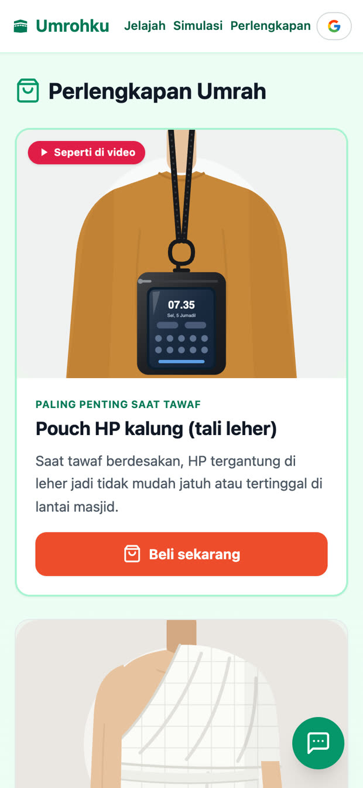
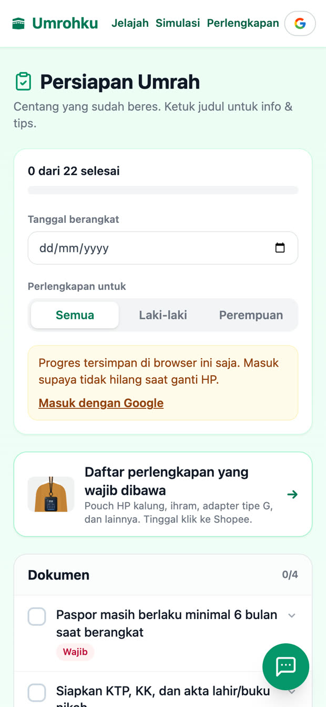

<title>Proposal Umrohku</title>
<meta name="claude:viewport-fit-sides" content="cover">
<link rel="stylesheet" href="https://fonts.googleapis.com/css2?family=Plus+Jakarta+Sans:wght@500;600;700;800&family=Amiri:wght@700&family=JetBrains+Mono:wght@500;600&display=swap">
<style>
/* Layout: one reading column (proposal document) with wide bands for screenshots and the payment flow; brand = deep emerald + champagne gold, as in the umrohku videos */
:root {
  --bg: #F4F7F5; --paper: #FFFFFF; --ink: #0B231B; --muted: #4E6A60; --line: #D7E3DD;
  --em: #0B6B4F; --em-soft: #E3F1EB; --gold: #A9801C; --gold-soft: #F7EED2; --warn: #B4471F; --warn-soft: #FBE8DF;
  --hero-1: #062A20; --hero-2: #0B4A39; --hero-ink: #F3E5AB; --hero-text: #E2EFE9;
  --display: "Plus Jakarta Sans", "Segoe UI", system-ui, sans-serif;
  --body: "Plus Jakarta Sans", "Segoe UI", system-ui, sans-serif;
  --mono: "JetBrains Mono", ui-monospace, "SF Mono", Menlo, monospace;
  --arabic: "Amiri", "Traditional Arabic", serif;
}
@media (prefers-color-scheme: dark) { :root:not([data-theme="light"]) {
  --bg: #07130F; --paper: #0D1D17; --ink: #E6F0EB; --muted: #9DB6AB; --line: #1F362D;
  --em: #34C995; --em-soft: #10302A; --gold: #E2C068; --gold-soft: #2E2812; --warn: #FF8A64; --warn-soft: #34190F;
  --hero-1: #03140F; --hero-2: #0A3A2D; --hero-ink: #F3E5AB; --hero-text: #D6E6DF; color-scheme: dark } }
:root[data-theme="dark"] {
  --bg: #07130F; --paper: #0D1D17; --ink: #E6F0EB; --muted: #9DB6AB; --line: #1F362D;
  --em: #34C995; --em-soft: #10302A; --gold: #E2C068; --gold-soft: #2E2812; --warn: #FF8A64; --warn-soft: #34190F;
  --hero-1: #03140F; --hero-2: #0A3A2D; --hero-ink: #F3E5AB; --hero-text: #D6E6DF; color-scheme: dark }

* { box-sizing: border-box }
body { background: var(--bg); color: var(--ink); font-family: var(--body); font-size: 16.5px; line-height: 1.65; }
.wrap { max-width: 860px; margin: 0 auto; padding-left: max(16px, env(safe-area-inset-left, 0px)); padding-right: max(16px, env(safe-area-inset-right, 0px)); }
.wide { max-width: 1120px; }
h1, h2, h3 { font-family: var(--display); text-wrap: balance; line-height: 1.2; margin: 0; }
h2 { font-size: clamp(26px, 4vw, 34px); font-weight: 800; letter-spacing: -.01em; }
h3 { font-size: 19px; font-weight: 700; }
p { margin: 0; max-width: 68ch; }
a { color: var(--em); }
.eyebrow { font: 600 12.5px/1 var(--mono); letter-spacing: .14em; text-transform: uppercase; color: var(--gold); }
section { padding-block: 56px; border-top: 1px solid var(--line); }
section > .wrap { display: grid; gap: 20px; }
.lead { font-size: 18.5px; color: var(--ink); }
.muted { color: var(--muted); }
.fill { background: var(--gold-soft); color: var(--gold); border: 1px dashed var(--gold); border-radius: 6px; padding: 0 6px; font-family: var(--mono); font-size: .86em; white-space: nowrap; }

/* hero */
.hero { background: radial-gradient(120% 90% at 50% 10%, var(--hero-2), var(--hero-1)); color: var(--hero-text); padding-block: 72px 64px; position: relative; overflow: hidden; }
.hero .wrap { display: grid; gap: 22px; position: relative; }
.hero .star { position: absolute; right: -60px; top: -40px; width: 360px; height: 360px; opacity: .14; pointer-events: none; }
.hero .arabic { font-family: var(--arabic); font-size: 26px; color: var(--hero-ink); direction: rtl; }
.hero h1 { font-size: clamp(44px, 9vw, 84px); font-weight: 800; letter-spacing: -.03em; color: #fff; }
.hero h1 span { color: var(--hero-ink); }
.hero .motto { font-size: clamp(20px, 3.4vw, 28px); font-weight: 700; color: var(--hero-ink); }
.hero p { color: var(--hero-text); font-size: 18px; }
.meta { display: flex; flex-wrap: wrap; gap: 10px 24px; font: 500 13.5px/1.4 var(--mono); color: var(--hero-text); opacity: .85; }

/* numbers */
.stats { display: grid; grid-template-columns: repeat(auto-fit, minmax(150px, 1fr)); gap: 12px; }
.stat { background: var(--paper); border: 1px solid var(--line); border-radius: 14px; padding: 16px 18px; display: grid; gap: 4px; align-content: start; }
.stat b { font: 700 28px/1.1 var(--display); font-variant-numeric: tabular-nums; color: var(--em); }
.stat span { font-size: 14px; color: var(--muted); line-height: 1.4; }
.stat small { font: 500 11.5px/1.3 var(--mono); color: var(--muted); }

/* lists */
.problems { display: grid; grid-template-columns: repeat(auto-fit, minmax(240px, 1fr)); gap: 14px; }
.problem { border-left: 3px solid var(--warn); padding: 4px 0 4px 16px; display: grid; gap: 6px; }
.problem h3 { font-size: 17px; }
.problem p { font-size: 15px; color: var(--muted); }

/* screenshots */
.shots { display: grid; grid-template-columns: repeat(auto-fit, minmax(190px, 1fr)); gap: 22px 16px; }
figure { margin: 0; display: grid; gap: 10px; align-content: start; }
.phone { border-radius: 26px; border: 6px solid var(--ink); overflow: hidden; background: var(--paper); aspect-ratio: 390 / 844; max-width: 100%; box-shadow: 0 14px 30px -18px rgba(0,0,0,.45); }
.phone img { display: block; width: 100%; height: 100%; object-fit: cover; object-position: top; }
figcaption { display: grid; gap: 2px; }
figcaption b { font-size: 15px; }
figcaption span { font-size: 13.5px; color: var(--muted); line-height: 1.45; }
.phone.todo { border-style: dashed; border-color: var(--gold); background: var(--gold-soft); display: grid; place-items: center; text-align: center; padding: 18px; }
.phone.todo div { display: grid; gap: 8px; justify-items: center; }
.phone.todo strong { font: 700 16px/1.3 var(--display); color: var(--ink); }
.phone.todo em { font: 600 11.5px/1 var(--mono); letter-spacing: .12em; text-transform: uppercase; color: var(--gold); font-style: normal; }
.tag { display: inline-block; font: 600 11px/1 var(--mono); letter-spacing: .08em; text-transform: uppercase; padding: 5px 8px; border-radius: 999px; background: var(--em-soft); color: var(--em); justify-self: start; }
.tag.next { background: var(--gold-soft); color: var(--gold); }

/* flow */
.flow { display: grid; grid-template-columns: repeat(auto-fit, minmax(190px, 1fr)); gap: 0; counter-reset: s; background: var(--paper); border: 1px solid var(--line); border-radius: 16px; overflow: hidden; }
.step { padding: 18px; display: grid; gap: 6px; align-content: start; border-right: 1px solid var(--line); border-bottom: 1px solid var(--line); counter-increment: s; }
.step::before { content: counter(s); font: 700 13px/1 var(--mono); color: var(--paper); background: var(--em); width: 26px; height: 26px; border-radius: 50%; display: grid; place-items: center; }
.step b { font-size: 15.5px; }
.step span { font-size: 14px; color: var(--muted); line-height: 1.5; }
.note { background: var(--em-soft); border-radius: 12px; padding: 14px 18px; font-size: 15px; }
.note.warn { background: var(--warn-soft); }

/* tables */
.tbl { overflow-x: auto; border: 1px solid var(--line); border-radius: 14px; background: var(--paper); }
table { border-collapse: collapse; width: 100%; min-width: 600px; font-size: 14.5px; }
th, td { text-align: left; padding: 12px 14px; border-bottom: 1px solid var(--line); vertical-align: top; }
th { font: 600 11.5px/1.3 var(--mono); letter-spacing: .1em; text-transform: uppercase; color: var(--muted); background: var(--bg); }
tr:last-child td { border-bottom: 0; }
td b { font-weight: 700; }

/* two paths */
.paths { display: grid; grid-template-columns: repeat(auto-fit, minmax(280px, 1fr)); gap: 14px; }
.path { background: var(--paper); border: 1px solid var(--line); border-radius: 16px; padding: 20px; display: grid; gap: 10px; align-content: start; }
.path.primary { border: 2px solid var(--em); }
.path ul { margin: 0; padding-left: 18px; display: grid; gap: 6px; font-size: 15px; }

/* roadmap */
.road { display: grid; gap: 0; border-left: 2px solid var(--line); margin-left: 8px; }
.phase { position: relative; padding: 0 0 26px 26px; display: grid; gap: 6px; }
.phase::before { content: ""; position: absolute; left: -9px; top: 4px; width: 16px; height: 16px; border-radius: 50%; background: var(--paper); border: 3px solid var(--em); }
.phase.now::before { background: var(--em); }
.phase .when { font: 600 12px/1 var(--mono); letter-spacing: .1em; text-transform: uppercase; color: var(--gold); }
.phase ul { margin: 0; padding-left: 18px; display: grid; gap: 4px; font-size: 15px; color: var(--muted); }

.cols { display: grid; grid-template-columns: repeat(auto-fit, minmax(260px, 1fr)); gap: 14px; }
.box { background: var(--paper); border: 1px solid var(--line); border-radius: 14px; padding: 18px; display: grid; gap: 8px; align-content: start; }
.box ul { margin: 0; padding-left: 18px; display: grid; gap: 5px; font-size: 15px; }
.sources { font-size: 13.5px; color: var(--muted); display: grid; gap: 4px; padding-left: 18px; margin: 0; }
footer { padding-block: 40px 56px; border-top: 1px solid var(--line); }
footer .wrap { display: grid; gap: 6px; }
</style>

<header class="hero">
  <svg class="star" viewBox="0 0 200 200" aria-hidden="true"><g fill="none" stroke="#F3E5AB" stroke-width="2"><rect x="40" y="40" width="120" height="120"/><rect x="40" y="40" width="120" height="120" transform="rotate(45 100 100)"/><circle cx="100" cy="100" r="48"/><circle cx="100" cy="100" r="84"/></g></svg>
  <div class="wrap">
    <span class="eyebrow" style="color:var(--hero-ink)">Proposal Bisnis · November 2026</span>
    <h1>Umroh<span>ku</span></h1>
    <div class="motto">Ikhtiar menuju Baitullah</div>
    <p>Satu pintu untuk merencanakan, membayar, dan menyiapkan umroh: membandingkan paket dari travel berizin, membayar DP dengan aman, mencicil secara syariah, sampai belajar manasik lewat simulasi 3D.</p>
    <div class="meta"><span>umrohku.web.id</span><span>IG · TikTok · Threads @umrohku.web.id</span><span>Disusun oleh <span class="fill">[Nama founder]</span></span></div>
  </div>
</header>

<section>
  <div class="wrap">
    <span class="eyebrow">Ringkasan</span>
    <h2>Umroh adalah perjalanan sekali seumur hidup yang masih dibeli dengan cara lama.</h2>
    <p class="lead">Calon jamaah membandingkan paket lewat brosur dan grup WhatsApp, menyetor puluhan juta dengan rasa was-was, lalu berangkat dengan persiapan seadanya. Umrohku sudah memecahkan sisi informasinya. Langkah berikutnya: menjadi tempat jamaah <b>memesan dan membayar</b>, dengan cicilan syariah, DP ringan, cashback, dan undian umroh sebagai alasan jamaah memilih membayar lewat umrohku.</p>
    <div class="stats">
      <div class="stat"><b>18</b><span>travel umroh yang paketnya sudah tampil</span></div>
      <div class="stat"><b>±835</b><span>paket umroh, diperbarui 2× sehari</span></div>
      <div class="stat"><b>1.158</b><span>jadwal keberangkatan, Nov 2026 – Des 2027</span></div>
      <div class="stat"><b>82</b><span>hotel Makkah &amp; Madinah dengan jarak ke masjid</span></div>
    </div>
    <p class="muted" style="font-size:14px">Angka di atas dari basis data umrohku per 11 November 2026.</p>
  </div>
</section>

<section>
  <div class="wrap">
    <span class="eyebrow">Masalah</span>
    <h2>Yang dihadapi calon jamaah hari ini</h2>
    <div class="problems">
      <div class="problem"><h3>Travel makin banyak, makin sulit memilih</h3><p>Jumlah jamaah naik setiap tahun dan travel baru terus bermunculan. Harga, maskapai, hotel, dan jarak ke Masjidil Haram tersebar di puluhan situs dan brosur dengan format berbeda.</p></div>
      <div class="problem"><h3>Takut tertipu</h3><p>Kemenhaj mencatat 244 kasus haji dan umrah dengan kerugian Rp247,65 miliar. Kasus terbaru: 52 jamaah umroh yang membayar Rp25 juta justru diberangkatkan ke Thailand <span class="fill" style="white-space:normal">[sumber berita]</span>. Jamaah kini makin selektif, tapi sulit memastikan travel mana yang berizin dan aman.</p></div>
      <div class="problem"><h3>Haji makin jauh, umroh jadi tujuan menabung</h3><p>Antrean haji reguler di banyak daerah mencapai puluhan tahun dan biayanya terus naik. Banyak keluarga memilih menabung untuk umroh, sering bertahun-tahun, meski harga umroh juga naik.</p></div>
      <div class="problem"><h3>Biaya besar sekaligus</h3><p>Paket mulai sekitar Rp23,5 juta per orang. Banyak keluarga butuh cara mencicil yang tidak melanggar prinsip syariah.</p></div>
      <div class="problem"><h3>Persiapan dan manasik membingungkan</h3><p>Dokumen, perlengkapan, dan tata cara ibadah dipelajari sendiri-sendiri, sering baru di hari keberangkatan.</p></div>
    </div>
  </div>
</section>

<section>
  <div class="wrap">
    <span class="eyebrow">Pasar</span>
    <h2>Pasar besar yang sedang berubah</h2>
    <div class="stats">
      <div class="stat"><b>1,6 jt</b><span>jamaah umroh Indonesia di 2025</span><small>Siskopatuh</small></div>
      <div class="stat"><b>±Rp48 T</b><span>nilai pasar per tahun</span><small>asumsi rata-rata paket Rp30 jt</small></div>
      <div class="stat"><b>7</b><span>perusahaan pembiayaan yang aktif membiayai umroh</span><small>OJK</small></div>
      <div class="stat"><b>84%</b><span>jamaah umroh dilayani BSI</span><small>Siskopatuh 2025</small></div>
    </div>
    <div class="cols">
      <div class="box"><h3>Regulasi membuka jalur baru</h3><p class="muted" style="font-size:15px">UU 14/2025 mengakui umrah mandiri di samping PPIU, dan Saudi membuka Nusuk Umrah untuk pemesanan langsung. Jamaah makin butuh panduan dan alat bantu digital.</p></div>
      <div class="box"><h3>Pembiayaan syariah tumbuh</h3><p class="muted" style="font-size:15px">Piutang pembiayaan syariah multifinance mencapai Rp32,17 triliun per September 2026, dan OJK menilai pemain pembiayaan umroh masih sedikit.</p></div>
      <div class="box"><h3>Pembayaran di Saudi berbenah</h3><p class="muted" style="font-size:15px">Bank Indonesia mengumumkan rencana QRIS lintas negara ke Arab Saudi untuk jamaah haji dan umroh (Juni 2026). Belum ada tanggal operasionalnya.</p></div>
    </div>
  </div>
</section>

<section>
  <div class="wrap wide">
    <span class="eyebrow">Produk hari ini</span>
    <h2>Sudah berjalan di umrohku.web.id</h2>
    <p>Semua tangkapan layar diambil dari situs langsung, tampilan ponsel.</p>
    <div class="shots">
      <figure><div class="phone"></div><figcaption><span class="tag">Berjalan</span><b>Cari paket berdasarkan budget</b><span>Geser budget, pilih travel, langsung keluar rekomendasi.</span></figcaption></figure>
      <figure><div class="phone"></div><figcaption><span class="tag">Berjalan</span><b>Rekomendasi paket</b><span>Harga, DP, maskapai, jarak hotel ke Haram dan Nabawi, kalkulator, simpan.</span></figcaption></figure>
      <figure><div class="phone"></div><figcaption><span class="tag">Berjalan</span><b>Kalender keberangkatan</b><span>Jumlah jadwal per hari, harga termurah, musim libur, Ramadan, dan cuaca.</span></figcaption></figure>
      <figure><div class="phone"></div><figcaption><span class="tag">Berjalan</span><b>Jelajah Masjidil Haram 3D</b><span>Denah dari OpenStreetMap: 126 pintu, menara, dan gedung sekitar.</span></figcaption></figure>
      <figure><div class="phone"></div><figcaption><span class="tag">Berjalan</span><b>Simulasi tawaf</b><span>Tujuh putaran dari Hajar Aswad, dengan doa dan panduan.</span></figcaption></figure>
      <figure><div class="phone"></div><figcaption><span class="tag">Berjalan</span><b>Simulasi sa'i</b><span>Tujuh lintasan Shafa–Marwah dengan penanda lampu hijau.</span></figcaption></figure>
      <figure><div class="phone"></div><figcaption><span class="tag">Berjalan</span><b>Perlengkapan umroh</b><span>24 produk pilihan dengan link afiliasi.</span></figcaption></figure>
      <figure><div class="phone"></div><figcaption><span class="tag">Berjalan</span><b>Checklist persiapan</b><span>22 langkah: dokumen, vaksin, Nusuk, manasik. Tersimpan di akun.</span></figcaption></figure>
    </div>
    <p class="muted" style="font-size:15px">Juga sudah berjalan: login Google, tabungan umroh (pencatatan target dan setoran), paket tersimpan, insight per jadwal, chat bantuan, dan dashboard admin yang mengukur klik WhatsApp dan website per travel.</p>
  </div>
</section>

<section>
  <div class="wrap wide">
    <span class="eyebrow">Yang akan dibangun</span>
    <h2>Dari tempat membandingkan menjadi tempat memesan</h2>
    <div class="shots">
      <figure><div class="phone todo"><div><em>Foto menyusul</em><strong>Bayar DP di umrohku</strong></div></div><figcaption><span class="tag next">Fase 2</span><b>Booking &amp; DP</b><span>Virtual account atau QRIS yang langsung masuk ke rekening penampungan travel atas nama jamaah.</span></figcaption></figure>
      <figure><div class="phone todo"><div><em>Foto menyusul</em><strong>Cicilan syariah</strong></div></div><figcaption><span class="tag next">Fase 2</span><b>Cicilan syariah</b><span>Cicil sebelum berangkat, atau berangkat dulu lewat perusahaan pembiayaan syariah mitra.</span></figcaption></figure>
      <figure><div class="phone todo"><div><em>Foto menyusul</em><strong>Portal travel</strong></div></div><figcaption><span class="tag next">Fase 1</span><b>Portal travel &amp; badge PPIU</b><span>Travel mengelola paket dan seat, melihat lead, dan tampil dengan nomor izin terverifikasi.</span></figcaption></figure>
      <figure><div class="phone todo"><div><em>Foto menyusul</em><strong>Cashback umrohku</strong></div></div><figcaption><span class="tag next">Fase 2</span><b>DP ringan, cashback &amp; voucher</b><span>DP lebih ringan dari travel mitra, plus cashback dan voucher yang hanya ada bila memesan lewat umrohku.</span></figcaption></figure>
      <figure><div class="phone todo"><div><em>Foto menyusul</em><strong>Undian umroh</strong></div></div><figcaption><span class="tag next">Fase 2</span><b>Undian umroh berhadiah</b><span>Setiap booking lewat umrohku otomatis ikut undian, tanpa biaya tambahan.</span></figcaption></figure>
      <figure><div class="phone todo"><div><em>Foto menyusul</em><strong>Oleh-oleh</strong></div></div><figcaption><span class="tag next">Fase 4</span><b>Oleh-oleh &amp; voucher Tanah Suci</b><span>Dikirim ke rumah dari Indonesia, atau voucher prabayar yang ditukar di toko dan restoran mitra di Makkah dan Madinah.</span></figcaption></figure>
    </div>
  </div>
</section>

<section>
  <div class="wrap wide">
    <span class="eyebrow">Alur pembayaran</span>
    <h2>Bayar lewat umrohku, uang langsung ke rekening resmi travel</h2>
    <div class="flow">
      <div class="step"><b>Pilih paket</b><span>Jamaah memilih paket dari travel PPIU terverifikasi dan memakai voucher umrohku.</span></div>
      <div class="step"><b>Bayar DP</b><span>Umrohku membuat virtual account atau QRIS untuk jamaah, nominal mulai ratusan ribu.</span></div>
      <div class="step"><b>Dana masuk ke travel</b><span>Uang langsung masuk ke rekening penampungan travel atas nama jamaah, tidak lewat rekening umrohku.</span></div>
      <div class="step"><b>Konfirmasi otomatis</b><span>Bukti bayar dan status booking terkirim ke jamaah dan travel, dan tercatat di akun.</span></div>
      <div class="step"><b>Pelunasan</b><span>Lunas sekaligus, cicil sebelum berangkat, atau lewat pembiayaan syariah mitra.</span></div>
    </div>
    <p class="note">Alur ini mengikuti PP 38/2021: jamaah wajib menyetor biaya umroh ke rekening penampungan PPIU atas nama jamaah. Umrohku mengatur alur dan pencatatannya, tanpa menampung dana jamaah. Pendapatan umrohku ditagihkan terpisah dari DP.</p>
  </div>
</section>

<section>
  <div class="wrap">
    <span class="eyebrow">Nilai untuk jamaah</span>
    <h2>Kenapa bayar lewat umrohku, bukan langsung ke travel</h2>
    <p>Harga paket sama dengan harga resmi travel. Bedanya, jamaah mendapat empat keuntungan yang tidak ada bila membayar langsung.</p>
    <div class="cols" style="grid-template-columns:repeat(auto-fit,minmax(min(100%,340px),1fr))">
      <div class="box"><span class="tag">Cicilan</span><h3>Bisa dicicil secara syariah</h3><p class="muted" style="font-size:15px">Cicil sebelum berangkat tanpa utang, atau berangkat dulu lewat perusahaan pembiayaan syariah mitra.</p></div>
      <div class="box"><span class="tag">DP ringan</span><h3>Booking cukup dengan DP lebih kecil</h3><p class="muted" style="font-size:15px">Besaran DP disepakati dalam perjanjian dengan travel mitra: <span class="fill" style="white-space:normal">[mis. Rp500 rb vs Rp3–5 jt]</span>. Seat aman lebih awal, dengan aturan pembatalan yang jelas.</p></div>
      <div class="box"><span class="tag">Cashback</span><h3>Cashback dan diskon dari umrohku</h3><p class="muted" style="font-size:15px">Dibiayai dari komisi umrohku, bukan dengan memotong harga travel. Travel tidak dirugikan dan harga resminya tetap terjaga.</p></div>
      <div class="box"><span class="tag">Undian</span><h3>Undian umroh berhadiah</h3><p class="muted" style="font-size:15px">Setiap booking otomatis ikut, tanpa biaya ikut dan tanpa kenaikan harga, sehingga bebas dari unsur maysir. Hadiah dari dana promosi umrohku, dengan izin Kemensos. Hadiah haji khusus menyusul nanti.</p></div>
    </div>
    <p class="note">Posisinya seperti tiket.com untuk umroh: umrohku menjadi perantara yang membuat pemesanan lebih mudah dan lebih untung bagi jamaah, sementara layanan ibadah dan perjalanan tetap dijalankan oleh travel PPIU.</p>
  </div>
</section>

<section>
  <div class="wrap">
    <span class="eyebrow">Cicilan syariah</span>
    <h2>Dua jalur, satu niat</h2>
    <div class="paths">
      <div class="path primary">
        <span class="tag">Jalur utama · umroh tanpa utang</span>
        <h3>Cicil sebelum berangkat</h3>
        <ul>
          <li>Jamaah memilih paket lalu menyetor rutin setiap bulan sampai lunas, kemudian berangkat.</li>
          <li>Tanpa utang dan tanpa margin.</li>
          <li>Dana disimpan di tabungan umroh atas nama jamaah di bank syariah mitra sampai lunas.</li>
          <li>Fitur tabungan umrohku yang sudah ada menjadi rekening sungguhan.</li>
        </ul>
      </div>
      <div class="path">
        <span class="tag next">Jalur kedua</span>
        <h3>Berangkat dulu, cicil kemudian</h3>
        <ul>
          <li>Pembiayaan oleh perusahaan pembiayaan syariah berizin OJK, umumnya dengan akad ijarah multijasa.</li>
          <li>Dana dicairkan langsung ke travel PPIU.</li>
          <li>Umrohku menerima fee rujukan per pembiayaan yang dicairkan.</li>
          <li>Bekerja sama dengan 2–3 mitra agar peluang persetujuan jamaah lebih besar. Calon mitra: <span class="fill" style="white-space:normal">[konfirmasi produk: mis. FIFGROUP Amitra, Adira Finance Syariah, bank syariah digital]</span>.</li>
        </ul>
      </div>
    </div>
    <p class="muted" style="font-size:15px">Cicil sebelum berangkat sengaja dijadikan jalur utama, karena sejalan dengan kebiasaan jamaah yang menabung dan menghindari kesan mengajak umroh dengan berutang. Umrohku tidak memberi pinjaman sendiri. Kesesuaian syariah produk pembiayaan berada di bawah Dewan Pengawas Syariah masing-masing mitra.</p>
  </div>
</section>

<section>
  <div class="wrap">
    <span class="eyebrow">Model bisnis</span>
    <h2>Sumber pendapatan</h2>
    <div class="tbl"><table>
      <thead><tr><th>Sumber</th><th>Dari siapa</th><th>Cara kerja</th><th>Status</th></tr></thead>
      <tbody>
        <tr><td><b>Komisi booking</b></td><td>Travel</td><td>Persentase per booking yang membayar DP lewat umrohku; sebagian dipakai untuk voucher jamaah</td><td>Fase 2</td></tr>
        <tr><td><b>Fee rujukan pembiayaan</b></td><td>Perusahaan pembiayaan</td><td>Per pembiayaan umroh yang dicairkan</td><td>Fase 2</td></tr>
        <tr><td><b>Kerja sama bank syariah</b></td><td>Bank</td><td>Pembukaan tabungan umroh atas nama jamaah</td><td>Fase 2</td></tr>
        <tr><td><b>Lead &amp; posisi unggulan</b></td><td>Travel</td><td>Biaya per lead WhatsApp terverifikasi dan slot "Promo Spesial"</td><td>Fase 1 (pola sudah ada)</td></tr>
        <tr><td><b>Langganan portal travel</b></td><td>Travel</td><td>Kelola paket dan seat, laporan klik dan lead</td><td>Fase 1</td></tr>
        <tr><td><b>Afiliasi perlengkapan</b></td><td>Marketplace</td><td>Komisi dari 24 produk perlengkapan</td><td>Berjalan</td></tr>
        <tr><td><b>Oleh-oleh &amp; voucher Tanah Suci</b></td><td>Jamaah / merchant</td><td>Margin penjualan dan komisi merchant</td><td>Fase 4</td></tr>
      </tbody>
    </table></div>
    <p class="muted" style="font-size:15px">Cashback, voucher, dan hadiah undian dibiayai dari bagian komisi dan anggaran promosi, bukan dengan menaikkan harga paket. Besaran komisi dan fee masih akan dinegosiasikan dengan mitra: <span class="fill">[isi setelah negosiasi]</span>.</p>
  </div>
</section>

<section>
  <div class="wrap">
    <span class="eyebrow">Keunggulan</span>
    <h2>Kenapa umrohku</h2>
    <div class="cols">
      <div class="box"><h3>Data harga lintas travel</h3><p class="muted" style="font-size:15px">Ratusan paket dari 18 travel dalam satu tempat, diperbarui dua kali sehari, lengkap dengan jarak hotel ke masjid.</p></div>
      <div class="box"><h3>Alasan untuk bertransaksi di umrohku</h3><p class="muted" style="font-size:15px">Jamaah bisa menghubungi travel langsung, tapi cicilan syariah, DP ringan, cashback, dan undian hanya tersedia lewat umrohku.</p></div>
      <div class="box"><h3>Edukasi yang menarik pengguna</h3><p class="muted" style="font-size:15px">Simulasi 3D dan konten video membawa calon jamaah datang sebelum mereka siap membeli, jadi biaya akuisisi lebih rendah.</p></div>
      <div class="box"><h3>Kepercayaan sebagai produk</h3><p class="muted" style="font-size:15px">Badge PPIU, dana langsung ke rekening resmi travel, dan ulasan dari jamaah yang benar-benar berangkat.</p></div>
    </div>
  </div>
</section>

<section>
  <div class="wrap">
    <span class="eyebrow">Lanskap</span>
    <h2>Pemain lain di sekitar umroh digital</h2>
    <div class="tbl"><table>
      <thead><tr><th>Pemain</th><th>Fokus</th><th>Posisi umrohku</th></tr></thead>
      <tbody>
        <tr><td><b>Situs dan WhatsApp travel</b></td><td>Menjual paket travel itu sendiri</td><td>Membandingkan lintas travel, lalu meneruskan pembayaran ke travel</td></tr>
        <tr><td><b>Marketplace umroh terdahulu</b> (mis. Pergiumroh, Waqara)</td><td>Katalog paket umroh online</td><td>Ditambah cicilan syariah, simulasi manasik, dan perlengkapan</td></tr>
        <tr><td><b>Nusuk Umrah</b> (Saudi)</td><td>Visa dan layanan langsung dari Saudi</td><td>Panduan berbahasa Indonesia dan jalur lewat PPIU</td></tr>
        <tr><td><b>Travel dengan cicilan sendiri</b> (mis. Wipatour)</td><td>Cicilan untuk paket travel itu sendiri</td><td>Cicilan untuk paket dari banyak travel, dengan pilihan beberapa mitra pembiayaan</td></tr>
        <tr><td><b>Fintech umroh</b> (mis. UmrahCash)</td><td>Tabungan, pembiayaan, pembayaran</td><td>Calon mitra atau pesaing di sisi pembayaran</td></tr>
      </tbody>
    </table></div>
  </div>
</section>

<section>
  <div class="wrap">
    <span class="eyebrow">Roadmap</span>
    <h2>Tahapan pengembangan</h2>
    <div class="road">
      <div class="phase now"><span class="when">Fase 1 · 0–6 bulan</span><h3>Pembanding umroh terverifikasi</h3><ul><li>Badge PPIU dengan nomor izin</li><li>Portal travel: kelola paket, seat, dan laporan lead</li><li>Kerja sama tertulis dengan travel, menggantikan scraping</li><li>Tombol "Mau cicil?" untuk mengukur minat sejak awal</li></ul></div>
      <div class="phase"><span class="when">Fase 2 · 6–12 bulan</span><h3>Booking, DP, dan cicilan syariah</h3><ul><li>DP lewat virtual account atau QRIS ke rekening penampungan travel</li><li>DP ringan dan cashback bersama travel mitra</li><li>Voucher umrohku</li><li>Undian umroh berhadiah, setelah izin Kemensos keluar</li><li>Tabungan umroh bersama bank syariah</li><li>Rujukan ke 2–3 perusahaan pembiayaan syariah</li></ul></div>
      <div class="phase"><span class="when">Fase 3</span><h3>Modul umrah mandiri</h3><ul><li>Panduan Nusuk, hotel, transportasi, dan pendamping, setelah aturan turunan dan putusan MK jelas</li></ul></div>
      <div class="phase"><span class="when">Fase 4</span><h3>Layanan di Tanah Suci</h3><ul><li>Oleh-oleh dikirim ke rumah</li><li>Voucher prabayar untuk toko dan restoran mitra di Makkah dan Madinah</li><li>Pickup di toko, setelah ada mitra di Saudi</li><li>Hadiah undian haji khusus, bila skala bisnis sudah memungkinkan</li></ul></div>
    </div>
  </div>
</section>

<section>
  <div class="wrap">
    <span class="eyebrow">Traksi</span>
    <h2>Angka pertumbuhan</h2>
    <p>Analytics internal umrohku berjalan sejak awal November 2026. Diisi setelah 6–8 minggu pengukuran.</p>
    <div class="stats">
      <div class="stat"><b class="fill" style="font-size:18px">[isi]</b><span>pengunjung unik per bulan</span></div>
      <div class="stat"><b class="fill" style="font-size:18px">[isi]</b><span>klik WhatsApp ke travel per bulan</span></div>
      <div class="stat"><b class="fill" style="font-size:18px">[isi]</b><span>pengguna login Google</span></div>
      <div class="stat"><b class="fill" style="font-size:18px">[isi]</b><span>target tabungan aktif</span></div>
      <div class="stat"><b class="fill" style="font-size:18px">[isi]</b><span>surat minat (LOI) dari travel</span></div>
    </div>
  </div>
</section>

<section>
  <div class="wrap">
    <span class="eyebrow">Kepatuhan &amp; risiko</span>
    <h2>Hal yang dijaga sejak awal</h2>
    <div class="tbl"><table>
      <thead><tr><th>Area</th><th>Langkah umrohku</th></tr></thead>
      <tbody>
        <tr><td><b>Dana jamaah</b> (PP 38/2021)</td><td>Pembayaran langsung ke rekening penampungan PPIU atas nama jamaah; umrohku tidak menampung dana</td></tr>
        <tr><td><b>Pembiayaan</b> (OJK)</td><td>Hanya lewat perusahaan pembiayaan dan bank berizin; umrohku tidak memberi pinjaman</td></tr>
        <tr><td><b>Data pribadi</b> (UU PDP)</td><td>Persetujuan eksplisit sebelum data dibagikan ke mitra; ekspor dan hapus data sudah tersedia</td></tr>
        <tr><td><b>Undian berhadiah</b> (Kemensos, syariah)</td><td>Izin undian gratis berhadiah dari Kemensos; peserta tidak membayar untuk ikut dan harga tidak dinaikkan, agar bebas maysir; mekanisme ditinjau dewan syariah atau ustadz pendamping</td></tr>
        <tr><td><b>Harga dan promo travel</b></td><td>DP ringan, harga, dan cashback diatur dalam perjanjian tertulis dengan setiap travel mitra; cashback dibiayai umrohku</td></tr>
        <tr><td><b>Legalitas platform</b></td><td>Badan usaha (PT), pendaftaran PSE di Komdigi, Syarat &amp; Ketentuan</td></tr>
        <tr><td><b>Regulasi umrah mandiri</b></td><td>Menunggu aturan turunan dan putusan uji materi di MK sebelum Fase 3</td></tr>
        <tr><td><b>Ketergantungan data</b></td><td>Beralih dari scraping ke kerja sama data dengan travel di Fase 1</td></tr>
      </tbody>
    </table></div>
  </div>
</section>

<section>
  <div class="wrap">
    <span class="eyebrow">Tim &amp; kebutuhan dana</span>
    <h2>Tim dan penggunaan dana</h2>
    <div class="cols">
      <div class="box"><h3>Tim</h3><ul><li><span class="fill">[Nama]</span> · Founder, produk &amp; teknologi</li><li><span class="fill">[Nama]</span> · Kemitraan travel &amp; keuangan</li><li><span class="fill">[Nama]</span> · Konten &amp; komunitas</li></ul></div>
      <div class="box"><h3>Kebutuhan dana: <span class="fill">[Rp ...]</span></h3><ul><li>Pengembangan booking, pembayaran, dan portal travel</li><li>Legal, perizinan, dan kepatuhan</li><li>Kemitraan travel, bank, dan perusahaan pembiayaan</li><li>Pemasaran konten dan komunitas</li><li>Operasional 12–18 bulan</li></ul></div>
    </div>
  </div>
</section>

<footer>
  <div class="wrap">
    <span class="eyebrow">Sumber data</span>
    <ul class="sources">
      <li>Data produk: basis data umrohku.web.id per 11 November 2026</li>
      <li><a href="https://infobanknews.com/bsi-genggam-pangsa-83-persen-jemaah-haji-indonesia">Infobank: 1,6 juta jamaah umrah 2025, 84% via BSI</a></li>
      <li><a href="https://www.rctiplus.com/news/detail/sindonews/5502797/kemenhaj-catat-244-kasus-haji-dan-umrah--kerugian-mencapai-rp247-65-miliar">Sindonews: 244 kasus haji dan umrah, kerugian Rp247,65 miliar</a></li>
      <li><a href="https://cahaya.kompas.com/aktual/25K02135332790/umrah-mandiri-diperbolehkan-menhaj-tegaskan-peran-ppiu-tak-tergantikan">Kompas: umrah mandiri diperbolehkan (UU 14/2025)</a></li>
      <li><a href="https://haj.gov.sa/en/Media-Center/Ministry-News/Ministry-of-Hajj-and-Umrah-launches-Nusuk-Umrah-service-to-enable-pilgrims-from-outside-the-Kingdom">Kemenhaj Saudi: peluncuran Nusuk Umrah</a></li>
      <li><a href="https://keuangan.kontan.co.id/news/peningkatan-pelaksanaan-ibadah-umrah-bisa-jadi-potensi-bagi-multifinance-syariah">Kontan: 7 perusahaan aktif membiayai umrah, akad ijarah multijasa</a></li>
      <li><a href="https://keuangan.kontan.co.id/news/tumbuh-791-piutang-pembiayaan-syariah-multifinance-rp-3217-t-per-september-2026">Kontan: piutang multifinance syariah Rp32,17 T per September 2026</a></li>
      <li><a href="https://english.news.cn/20260610/13e7c2733a8b4ab18cb7fba76bd7ff48/c.html">Xinhua: QRIS lintas negara ke Arab Saudi</a></li>
      <li><a href="https://peraturan.go.id/files/pp38-2021bt.pdf">PP 38/2021: rekening penampungan PPIU</a></li>
    </ul>
  </div>
</footer>
